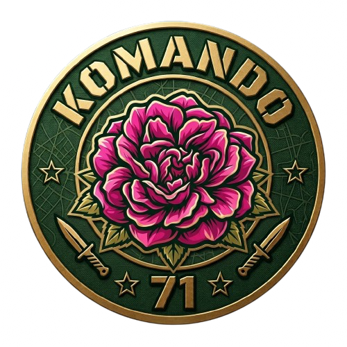
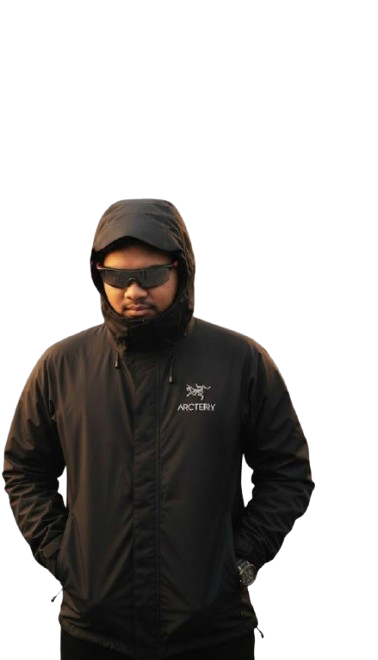

Cryptography
RSA, encoding layers, modular arithmetic and custom challenge crypto.
90%
ZHAFRAN DZAKYCTF PLAYER / CYBERSECURITY
Halo semua, saya Dzaky, bisa dipanggil kc0nk.

WHOAMI
ZHAFRAN DZAKY A.K - ιη′ / δ′ / ͵βδ′.
Kami hanya seorang solo player yang bersemangat untuk belajar dan berkontribusi dalam dunia cybersecurity.
CAPABILITIES
WRITE-UP ARCHIVE
Satu arsip untuk seluruh write-up BrunnerCTF. Klik card ini untuk memilih tipe challenge: Web, Crypto, Reverse, Forensics, Pwn, Misc, Program, atau Boot2Root.
PROOF OF WORK
BUILD STATUS
Saya mengembangkan sebuah alat berbasis website untuk membantu proses analisa keamanan dan workflow CTF dalam satu tempat. Konsepnya menggabungkan pemeriksaan target, analisis HTTP, request/response inspection, repeater, serta pencatatan workflow pengujian agar proses enumerasi sampai verifikasi menjadi lebih terstruktur.
Proyek ini sudah mencapai sekitar 75% tahap pengembangan dan pengujian. Mayoritas fungsi utama telah berhasil dicoba dan berjalan, namun masih ada beberapa bagian yang perlu disempurnakan sebelum benar-benar siap digunakan sebagai aplikasi mandiri.
Core analysis workflow sudah diuji. Fokus berikutnya adalah stabilisasi, packaging, dan release build.
Fungsi analisa web, pemrosesan request, tampilan response, repeater, dan alur kerja pengujian sudah dapat digunakan untuk proses uji coba internal.
Project masih berjalan dari environment pengembangan dan belum dipaketkan menjadi file .exe atau software standalone yang siap didistribusikan.
Finalisasi fitur, pengujian kompatibilitas, perapihan UI, kemudian build menjadi aplikasi desktop/standalone untuk penggunaan yang lebih praktis.
GET IN TOUCH
Zhafran Dzaky A.K. · Situbondo, East Java, Indonesia.
#!/bin/bash
status="OPEN_TO_COLLABORATION"
focus=(web rev crypto forensics misc)
echo "$status"
echo "solve_more_challenges()"
█